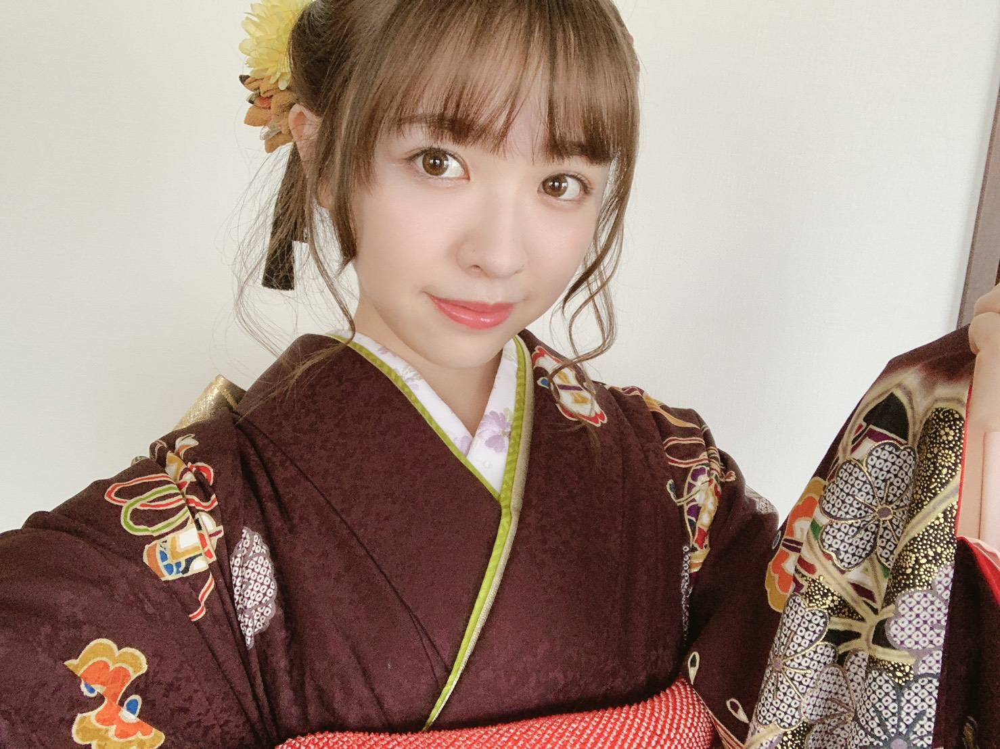
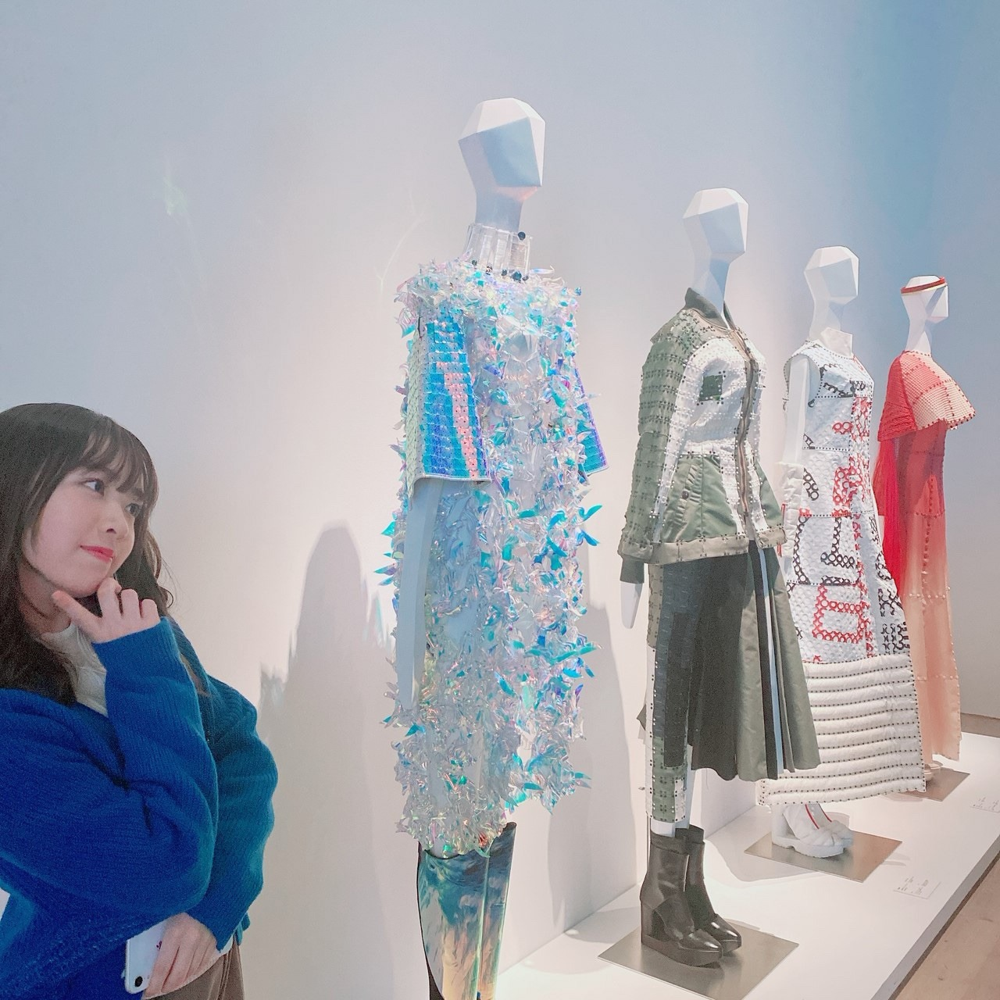

2020/0123Thu傘模様
新成人の皆様、おめでとうございます。
私も遂に新成人を迎える事が出来ました
葉月、桃子、美月と乃木神社にて
成人式を行いました。感慨深い、、
今までずっとお姉さんメンバーの振袖姿を
写真で見てきていつかこうなりたいなあと
ずっと思ってきていたから
遂に自分が迎えるとなると、何だか恥ずかしく
嬉しくもありました！
メンバーから見たよ！素敵だった！という声を
頂いてとても嬉しかった〜

そして
NOGIZAKA46 Live in Taipei 2020
お越し下さった皆様、ありがとうございました！
皆様に会える機会ができた事が
何より嬉しかったです。
名前を一所懸命呼んでくれたり
タオルを掲げてくれたり
本当にありがとうございました！

デザイン性のある素敵なお花もありがとう。
勇気付けられます
来られなかった皆様も
コメントや握手会等で応援して下さり
ありがとうございました！
メンバーと101タワーに登ったり
沢山写真を撮ってふざけて
今回もすっごく楽しかったです
またすぐ来られるように
私達も精一杯精進してまいります

さゆ
悲しいって気持ちももちろんあるけど
きっとさゆとは卒業した後も
会えるって分かってるから悲しい顔は
本人には見せず笑顔で送り出したい。
いろんな所行っていろんな話したね
先輩後輩という関係がいつの間にかこんなに
仲良くなれて私は凄く嬉しい
さゆのパフォーマンスが好き！
白石さん
私が落ち込んでいた時
私の身体よりも大きな袋にお下がりのお洋服を
大量に入れて持ってきてくれた事
いきなり抱き締めてもそれ以上に
ぎゅーっと強く抱き締めてくれる事
2期生に対してかけてくれた大事な言葉
白石さんもさゆも強い背中は何度も見てきた、
苦しんでる姿は
後輩に見せた事がありません。
まだ時間は残っているので
みんなで思い出を沢山
作っていけたらいいなあ
そして！
"2期生の単独ライブ"が
昨日のまいちゅんのオールナイトニッポンにて
発表されました。
場所は代々木第一体育館
かなり前から話は頂いていたので
ファンの皆さんに早く言いたくて
うずうずしておりました、笑
素敵なものが見せられるよう、
全力で頑張ります。


みり愛
2020/01/23 20:18


コメント(610)
絶対行く！！！
あと新成人もおめでとう！！
二期生ライブ絶対あてるからね！
がんばってね！！
楽しみ
二期生ライブも楽しみ！
頑張ってね！
遅くなったけど成人おめでとう。
二期生ライブ絶対あてるからね！
ライブ絶対行くね。
大好き！
待ちに待ってました
絶対に当てて行きます！
これからも頑張ってください
二期生ライブ行きたい〜^o^
同い年だから一緒に成人出来たの嬉しいな笑
これからの大人なみり愛ちゃんも楽しみですが、今までの可愛らしさ全開のみり愛ちゃんも続けてね！
2期生ライブなにがなんでも行きます！
めっっっちゃ楽しみ！！
そして成人、おめでとう。
入った時はあーんな子どもっぽくて可愛かった
みりあたんももう成人。そんなぼくも来年成人を迎えます。
今年もいっぱい会いに行くね！
いっぱい話したいです。よろしくね！
改めておめでとー！
改めて、成人おめでとう！！乃木神社での成人式でいろんな写真見たけど素敵やった！
台北でのライブお疲れ様でした。いつか日本から行けたらいいな...
2期の単独ライブおめでとう！俺は就活で行けないけど、多くの2期推しを喜ばせてくださいね！！
これからも体調に気をつけて頑張ってね！応援してます。
振袖悩んでたみたいだったけどめちゃくちゃいい！似合ってた！
そして2期生単独ライブおめでとう!!!
ずっと待っていたよ、楽しみにしていたよ、2019年いつも以上に2期生の活躍が目立ってたから2020年はどんな年になるよか楽しみにしてたありがとう!!!
絶対当てて代々木体育館で最高の姿を見るね
今年も握手会やらライブやらを一緒に楽しみたいな〜
卒業するメンバーも卒業してからの活動を応援します！
二期生ライブ本当に待ち望んでいたから嬉しいよ！
楽しみだよ！行きたいよ！当たらなきゃやだーーー。
って感じだけど、当たったらよろしくお願いします笑
ライブ自体、二期生みんなで楽しんでください！！
涼
二期生ライブ楽しみ！
絶対行く！
本当はもう少し早く全員でできたら良かったけど、
そんなこと言っても仕方ないし、楽しみに待ってる
ぼむすけ
とてもとても美しかったです☺︎
そして2期生単独ライブおめでとう！ほんとにほんとに嬉しいです！！これからもずっと応援していきます！
2期生ライブ当たりますように！！
新成人おめでとうー！
成人してくれてとても嬉しいです！
振袖姿とても綺麗です！
2期ライブ楽しみにしてますー
2期生ライブ絶対行く！！応援するーーーぞ
2期生ライブほぉんっと
楽しみだなあ。
行きたいなあ。
ライビュもしてほしいなあ。
成人おめでとーっっっ
オトナみり愛、楽しみですっ
よっしゃーーー
あしたからもーーー
がんばってこなぁ〜っ
お仕事頑張って下さい。
応援しています。
２期生ライブ 念願でしたもんね。
行きたい
成人おめでとう
最近はどうですか
台北ライブは楽しですか
めちゃくちゃ楽しかったでしょう
いいですね
最近は、みり愛ちゃんと一緒にプラネタリウム行きたいんだよなあ
いいですか
あの、
2期生単独ライブおめでとう
良かった
めちゃくちゃ良かった
頑張るぜ
最後は、八周年会いましょう
四日間も
今は楽しみですよ
成人おめでとうね
中国のOston リ
たのしみ二期単独！⁽⁽ ◟(∗ ˊωˋ ∗)◞ ⁾⁾
すごく嬉しい気持ちでいっぱいだよ！
同時に2期生単独ライブもおめでとう！
なんとか見に行けるように頑張るね！
ブログ更新ありがとう！！そして成人おめでとう
私がみり愛ちゃんを知った時中学生とかだったなぁって思うとなんか感慨深いよね( › ·̮ ‹ )
私も小学生だったけど高校生になったよ！！
みり愛ちゃんに早く会いたくてたまらないよ
2期生ライブ本当におめでとう！
すっごい嬉しいし、楽しみ！！当たるといいな。。
2020年はみり愛ちゃんに沢山会いたい！！
またコメントするね！
もか
台北行ったで！楽しかった！
にきら楽しみにしてる！
LIVEお疲れ様でした！
成人おめでとうございます！
僕も今年成人式があったのですがカナダに留学中でいけませんでした…
今年も新しいみり愛ちゃんを見せてね！
台湾ライブも無事成功だったみたいだね。
お花気合い入っててすごいね。。
2期生ライブ、ずっと待ってたよ。楽しみ！絶対当てるからね！！
振袖みり愛ちゃんらしくて好きだなぁ〜
私二年後何着ようかなぁ〜ってあれからずっと考えてるけど全然思いつかないから今度みり愛ちゃんに聞きに行くね！
みり愛ちゃんに早くあいたいよ〜
25枚目はいつもよりたくさんの会場にいくね！
2期生単独ライブもなんとしてでもいく！！
ずっとみり愛ちゃんを応援してるよ！
いつもありがとう！
だいすき！！！
改めて成人おめでとう！
改めて成人おめでとう！
2期生ライブ楽しみ！頑張ってね！
改めて新成人おめでとうございます！
振袖、とても似合ってたよ。色合いとかもすごくみり愛ちゃんらしいなって思いました。
素敵な女性になってください。みり愛ちゃんならきっとなれる。というか既になってます（笑）
台北ライブお疲れ様でした。海外でライブをやることはとても貴重な経験だよね。滅多にやらない場所で海外のお客様に向けてのパフォーマンスはまた違う感じなのかな？
メンバーのみんなとも沢山楽しい思い出が作れたみたいでよかったです。
さゆとまいやん、残り少ない時間だけど沢山思い出を作ってあげてください。これまでの素敵な思い出の話を聞けてほっこりした気持ちになりました。ほんとに素敵なグループだなって。
そして！ついに決まったね！2期生単独！
ほんとにおめでとう！！聞いた瞬間すごく嬉しかった。
念願だもんね。最高の時間になること間違い無し！
今から楽しみです。チケット当てて行きます。
ニュースで乃木神社の様子見ましたよ！晴れ着めっちゃ綺麗だったよ！本当におめでとう！
台北ライブお疲れ様です！無事に成功できて何よりです！
どんどん卒業していくと悲しいけど残り少ない日を悔いなく楽しもう！
2期生単独ライブを今日の夕方知ってめっちゃ驚いたよ！
めっちゃ楽しみだね！！当たれば行きますのでよろしくね！
ガンボー
代々木第一体育館での2期生コンサート、開催おめでとうございます。やっぱり神はいたんですね。ぜひ行かせて頂きたいと思います。
僕は毎回握手会に行くような、言わば第1線は退いてしまいましたが最近の、主に乃木坂工事中でのたくさんのご活躍、自分の事のように嬉しく、また楽しく拝見させていただいています。
最後に、御成人おめでとうございます。振袖姿とても美しかったです。同じ20歳で勝手ですがみり愛さんの推しで居られて誇らしい気持ちが芽生えました。
ライブ頑張ってください！
成人おめでとうね！！お姉ちゃんらしく乃木坂支えていってください！
おれはいつでも応援するし力になるで！！
今年も握手いっぱい行くからね！
とっても綺麗な大人になったね。
大人になったみり愛ちゃんのこれからが楽しみ。
成人式の振り袖の写真美人すぎるしめっちゃ似合ってるし最高！！！
こんな可愛い20いるかね( ＾∀＾)
成人になってからやりたいことはできなかな？？
20になってもみり愛ちゃんらしくこれからも頑張って欲しいな～( ＾ω＾ )
まいやんとさゆの卒業は寂しいよね‥‥‥
乃木坂を作ってきた1期生から2期生、3,4期生へ乃木坂のよさを伝えていってまた大きなグループになることを願っています( *´艸)
みり愛ちゃんも乃木坂を引っ張る立場として頑張って欲しい(^^)
それと2期生ライブおめでとう(￣ー￣)
神宮で期生別のライブを見てからいつか2期生ライブやってほしいって思ってたからめっちゃ嬉しい！！
2期生を応援してるファンからしたら夢みたいな出来事で最高です！！！
3月7日は歴史的な日になると思います！！
絶対当てて行きたいです！！
みり愛ちゃんいつもモバメもブログもありがとね！！
また更新待ってまーす(^o^)
コメントする